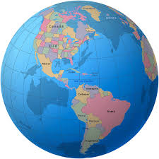

|  | América es el segundo continente más grande de la Tierra, después de Asia. Ocupa gran parte del hemisferio occidental del planeta. Se extiende desde el océano Ártico por el norte hasta las islas Diego Ramírez por el sur, en la confluencia de los océanos Atlántico y Pacífico, los cuales a su vez delimitan al continente por el este y el oeste, respectivamente. |
Con una superficie de más de 43 316 000 km², es la segunda masa de tierra más grande del globo (la primera es la parte no insular de Eurafrasia), cubriendo el 8 % de la superficie total del planeta y el 28.4 % de la tierra emergida, y además concentrando cerca del 12.5 % de la población humana. Las mayores aglomeraciones urbanas de América son Ciudad de México, Nueva York, São Paulo, Los Ángeles, Río de Janeiro, Buenos Aires, Lima y Bogotá. Debido a su gran tamaño y sus características geográficas, en algunas culturas, América se divide tradicionalmente en América del Norte, América Central, y América del Sur.5 Algunos geógrafos consideran a América Central como una subregión dentro de América del Norte. Atendiendo a sus características culturales, se distinguen América Anglosajona y América Latina.6 América fue poblada desde el Asia oriental y evolucionó durante miles de años sin tener contacto con otros continentes, estableciéndose diversas culturas a lo largo de todo su territorio y generando sus propias revoluciones neolíticas. A partir de la llegada de los españoles en 1492, el continente estableció un intercambio social y ecológico significativo con Eurafrasia. |